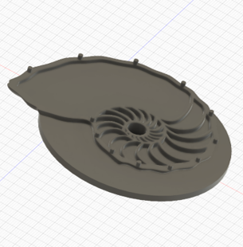

Background
After spending just over 3 years as an Environmental Engineer I made the decision in 2019 to focus on developing my programing abilities and begin my transition into the software development industry. Through a mixture of self-teaching as well as attending the Northcoders software developer training course in Manchester I have developed proficiency in JavaScript and Python.
Education (University of Nottingham)
- Dissertation: An investigation into the dermal exposure pathway of polycyclic armatic hydrocarbons from contaminated soils.
- Summer research placement at the British Geological Survey organic geochemistry laboratories.
- Dissertation: Investigating the use of geopolymer technology as a means to solidify and stablise oil well drilling waste in Libya.
- Industrial placement year as an Environmental Scientist at Delta-Simons Environmental Consultants.
MSc Environmental Management (2016-2017)- Distinction
Bsc Environmental Science (2012-2016)- First Class Honours
Awards and Commendations
- AECOM Bonus Award (2018): awarded following the successful delivery of a challenging, time critical document for a key planning meeting with regulatory stakeholders.
- Janet Murray Prize (2017): for being the best overall student on the Environmental Management MSc course.
- John Madocks Prize (2016): for contributing most to the work, well-being and standing of the University of Nottingham Agriculture and Environmental Science Division.
- Campbell Scientific Prize (2016): for submitting the best BSc Environmental Science dissertation.
Interests
Outside of coding I enjoy travelling fishing and video/boardgames with Friends. I also enjoy 3D design and printing. The Fusion360 embedded panel (best viewed in fullscreen) to the right shows the 3D model of a clock face I designed and printed. It's based on a nautilus shell and was later coated in carbon paint and electroplated with copper and nickel to give it a matte black and silver coloured metalic finish.